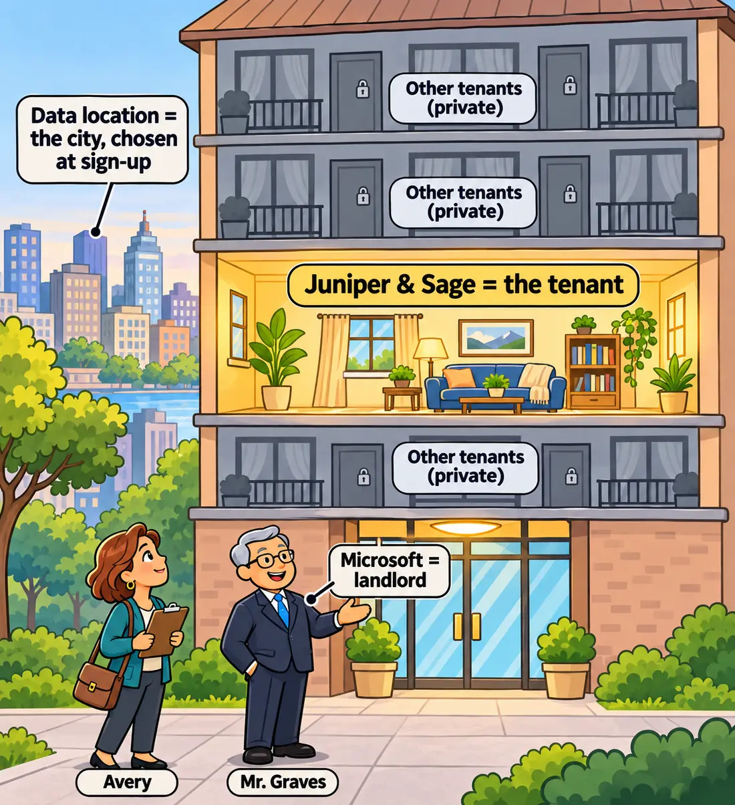
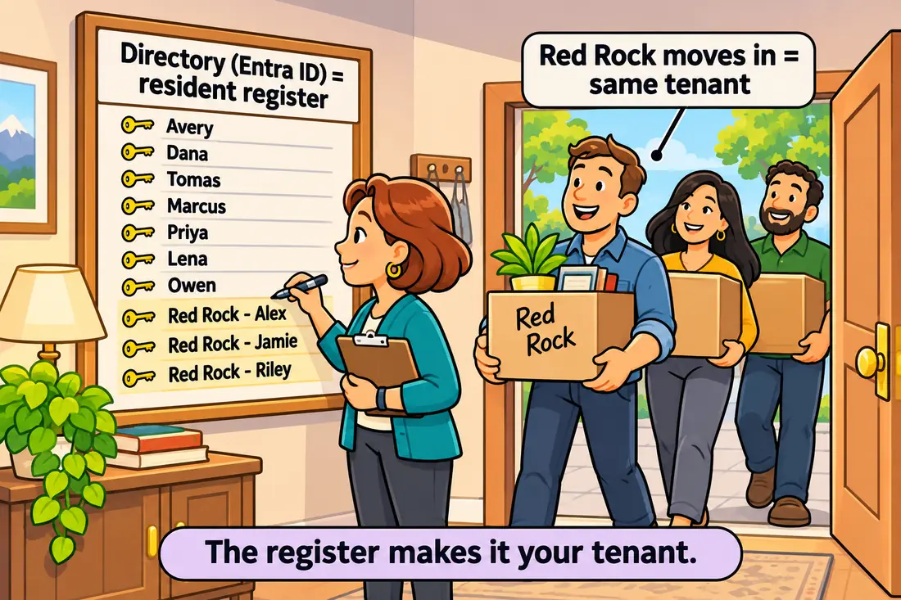
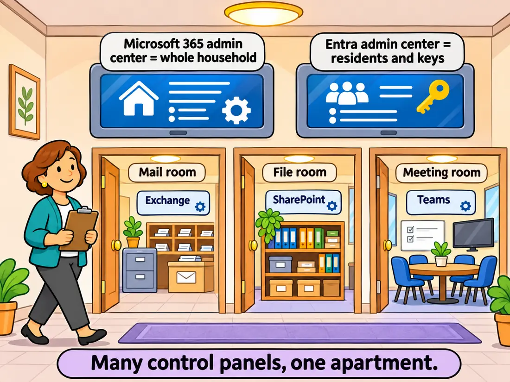
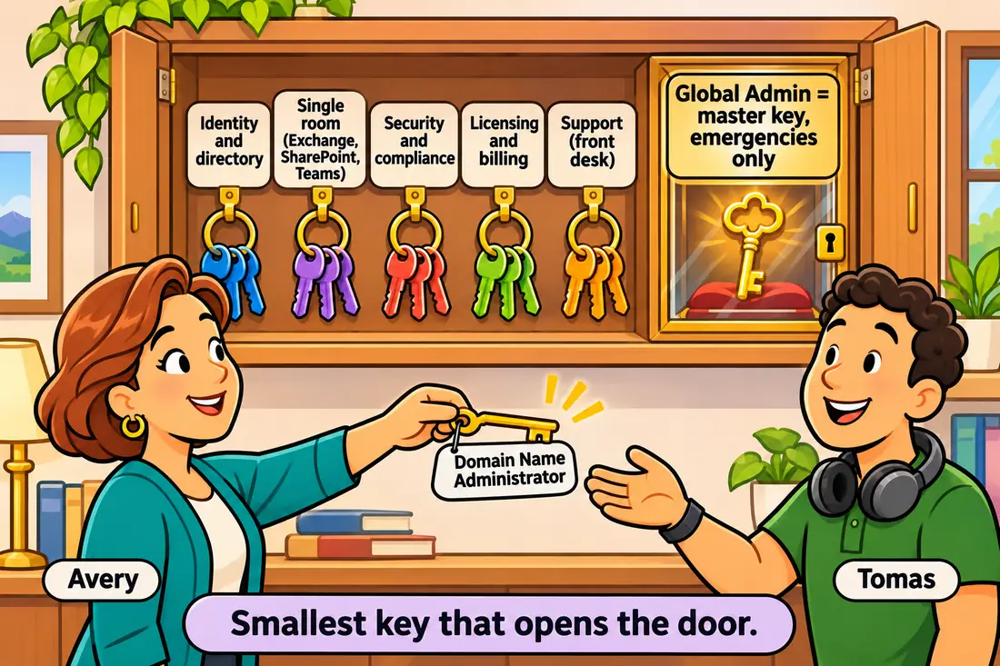
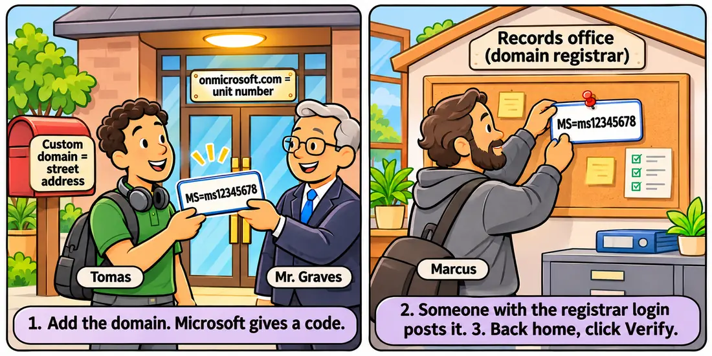
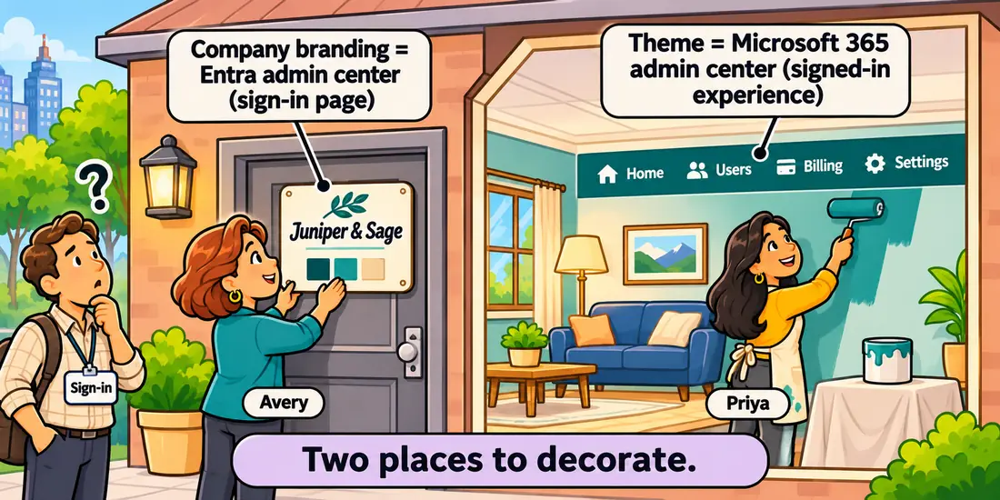
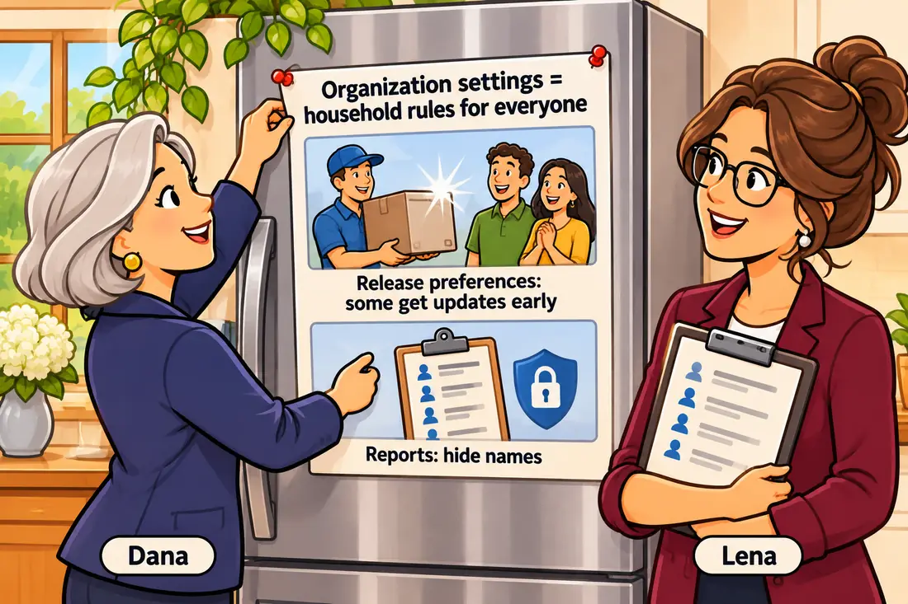

Light up every room before exam day
Each floor is an exam domain and each room a skill group. Rate your confidence, and the windows light up.
Resume studyingLearning path 1, module 1
Chapter 1: Provision and brand a tenant
Juniper & Sage is adding a new division. It doesn't need a new apartment: it joins the existing tenant. This chapter covers who can change what, how domains are proven, where branding lives, and which organization settings apply to whom.


The tenant is its directory
- A tenant is defined by its Entra ID directory, not by its domains or subscriptions. A new division joins the existing tenant.
- Four layers: tenant, subscription (such as E5), service plan (such as Exchange Online), and license (one user). Service plans can be switched off per license.
- Data location is set by the sign-up country. View it at Settings > Org settings > Organization profile > Data location.

Many admin centers, one tenant
- Microsoft 365 admin center: organization-wide tasks such as users, billing, domains, and Org settings.
- Entra admin center: identity, roles, and the sign-in page.
- Exchange, SharePoint, and Teams admin centers: deeper settings for one service.
- The Microsoft 365 admin center shows only common roles. Entra > Roles & admins has the full catalog.

Least privilege
- Domains: Domain Name Administrator.
- Assigning admin roles: Privileged Role Administrator.
- Sign-in page branding: Organizational Branding Administrator.
- Themes, pronouns, and release preferences: Global Administrator. There's no narrower role.
- Viewing settings without changing them: Global Reader.

Domains
- Settings > Domains > Add domain, publish the TXT record at the DNS host, then Verify.
- Verified isn't the default, and isn't mail-ready. TXT proves ownership; MX routes mail. Create mailboxes before changing MX.
- onmicrosoft.com can never be removed. To remove a custom domain, it must not be the default and must have zero references.
- Domain Connect still needs someone with the registrar login.

Branding: before or after sign-in?
- Before sign-in: Entra ID > Custom Branding, by the Organizational Branding Administrator. Tenant-wide; a language-specific setup wins when it matches.
- After sign-in: Org settings > Organization profile > Custom themes, by a Global Administrator.
- 1 default plus up to 4 group themes, each for up to 5 Microsoft 365 groups. A user in two themed groups sees the default.

Organization settings
- Security & privacy: password expiration (User Administrator, cloud-only accounts) and pronouns (Global Administrator, up to 7 hours).
- Organization profile: data location, themes, release preferences, and the send-from domain. Release and send-from changes take up to 24 hours.
- Services: calendar sharing and report privacy. Enabling a capability doesn't apply it to everyone.
- The sold-to address is under Billing > Billing accounts.
Full notes, screenshots, and the self-test are in your workbook's Study guide. Links are on the Links page.
All 17 modules
Track each module here. Module links open Microsoft Learn. Chapters are added as you finish modules.
Optional extras
- Understand Microsoft Entra ID (done). A primer before learning path 2.
- Create, configure, and manage identities (SC-300 path). Only if module 6 feels thin; also a head start on SC-300.
Practice like it's the job
Four drills built from module 1. More drills unlock as chapters are added.
A practice copy of the menus, simplified. It isn't a Microsoft product, and real menus may differ. Read the ticket, then click to the setting that solves it.
Tap the card to flip it. Cards you mark shaky come back more often. Background terms are old or on-premises words: recognize them, then move on.
All 58 skills Microsoft measures
Rate each one: 0 means not yet, 3 means you could teach it. Your ratings light up the building.
Skills list from Microsoft's AB-650 study guide, last updated July 27, 2026. Ratings stay in this browser only.
Where everything lives
Your workbook
Microsoft
Community notes
Community notes are not Microsoft's. Check surprises against Microsoft's docs.